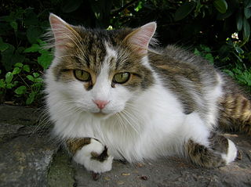

Bild 1
 Eine Hauskatze
Eine Hauskatze
Urheber: Frank Schulenburg, Linzenz:
CC BY-SA 4.0
Bild 2
 Eurpäische Kurzhaarkatze
Eurpäische Kurzhaarkatze
Urheber: Nicolai Schäfer, Linzenz:
CC BY-SA 4.0
Bild 3
 Eine gähnende Katze
Eine gähnende Katze
Urheber: Unknown, Linzenz:
by flickr
Bild 4

Eine Hauskatze
Urheber: Chatennoir, Linzenz:
CC BY-SA 4.0